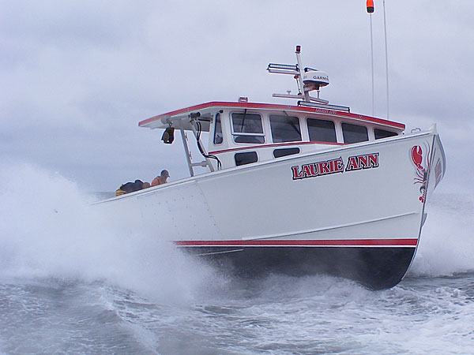

|
|
 |
|
Brian Robbins Photo |
Lauri Ann
Builder: H&H Marine,
Steuben, ME
Finisher: Taylored Boats, Addison, ME
Owner: Ryan Shoppee, Bucks Harbor, ME
Dimensions: 46’ x 17’6”
Designer: Osmond Beal; modified by Peter
Taylor
Hull: Solid fiberglass
Top: Molded unit
Power: 6135SFM85 john Deere (750 hp @ 2200
rpm) w/ 2.5:1 ZF 360A marine gear; Toppin’s Diesel &
Marine Service
Speed: 24 knots WOT; 18 knot cruise @ 1800
rpm
Prop: 36” x 38” x 4” Nautilus Marine
Shaft & Driveline Hardware: 2 ½”; R.E.Thomas
Marine Hardware
Hauler & Steering: Marine Hydraulics
Engineering Co. Inc.
|
|